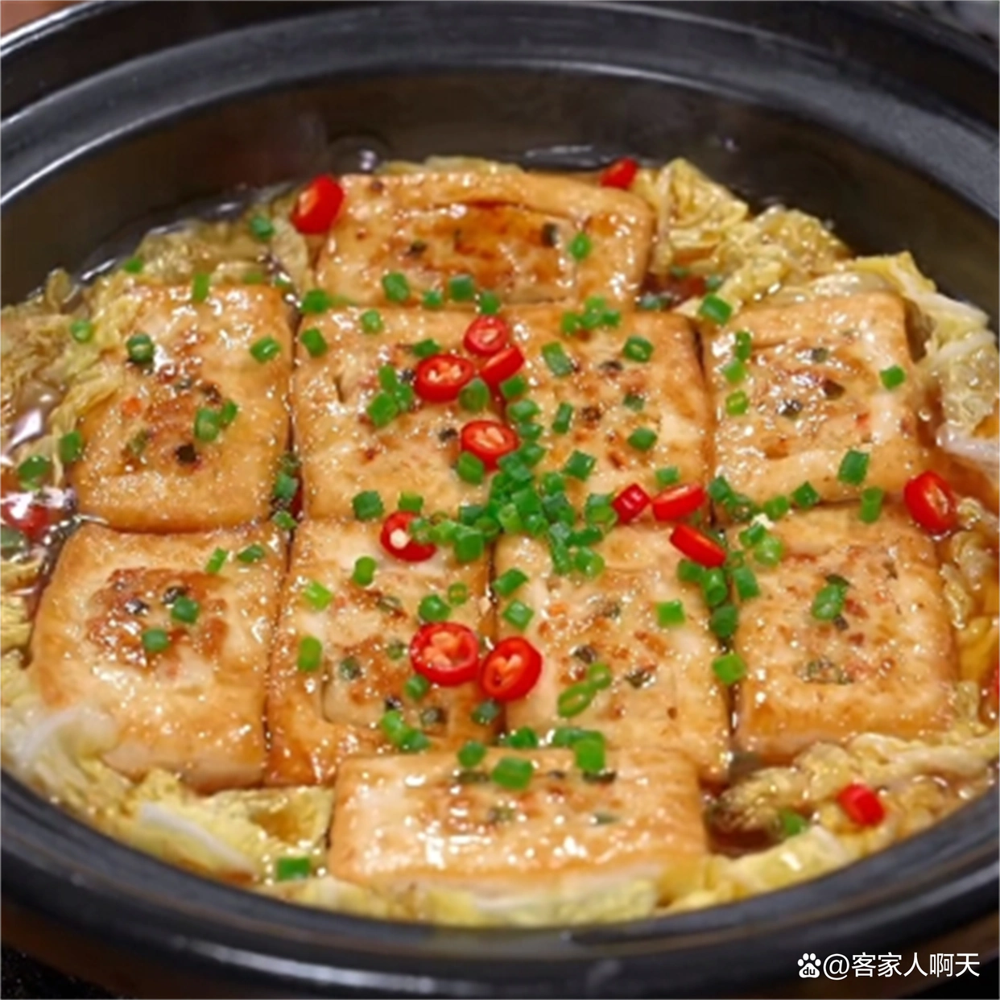
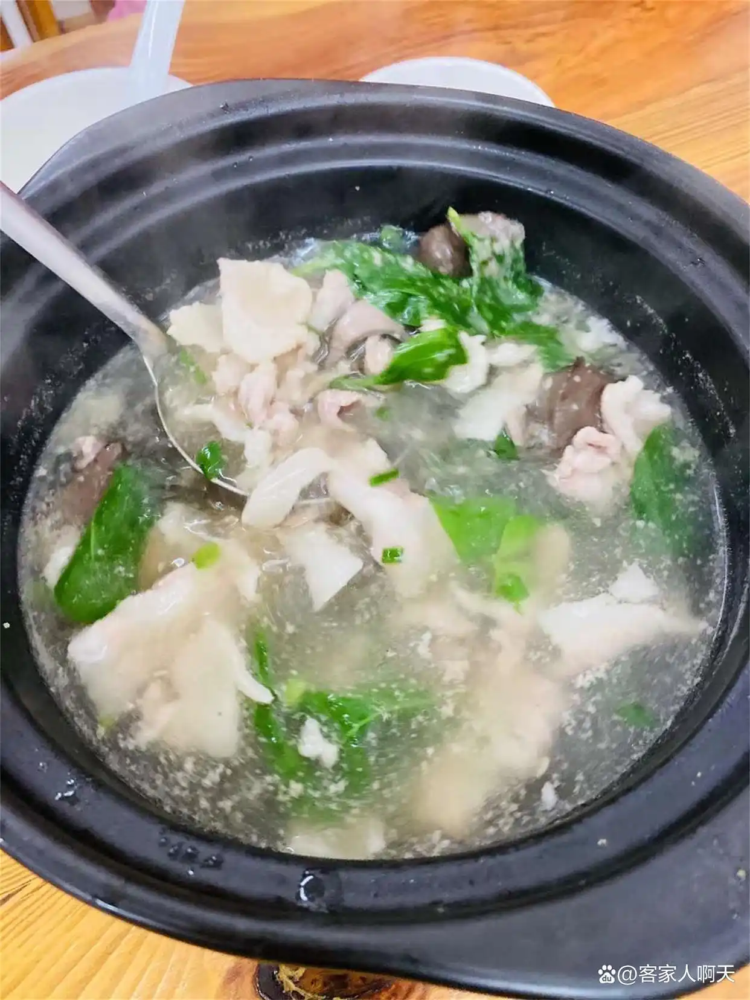
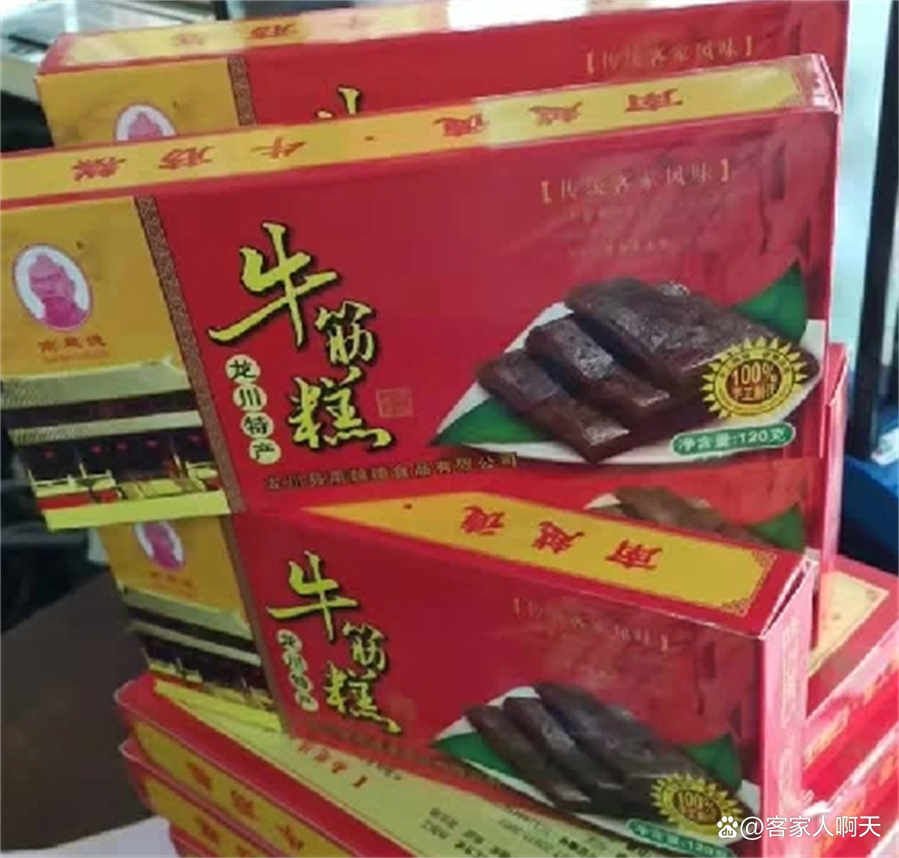

美食推荐

客家酿豆腐
客家酿豆腐是广东河源的一道传统名菜，也是客家菜系中的代表之一。它以豆腐为主要原料，将猪肉、虾仁、香菇等馅料填入豆腐中，再经过油炸、蒸煮等工艺制成。客家酿豆腐口感鲜美，外酥里嫩，是一道非常受欢迎的美食。

紫金八刀汤
紫金八刀汤是广东河源的一道传统名菜，也是客家菜系中的代表之一。它以猪肉为主要原料，将猪肉切成八块，放入锅中煮熟后，加入葱花、姜末、胡椒粉等调料制成。紫金八刀汤口感鲜美，营养丰富，是一道非常受欢迎的美食。

龙川牛筋糕
龙川牛筋糕是广东河源的一道传统小吃，也是客家菜系中的代表之一。它以糯米粉、白砂糖、麦芽糖等为主要原料，经过蒸制、烤制等工艺制成。龙川牛筋糕口感软糯，香甜可口，是一道非常受欢迎的美食。

客家黄酒
客家黄酒是广东河源的一道传统名菜，也是客家菜系中的代表之一。它以糯米为主要原料，经过发酵、蒸馏等工艺制成。客家黄酒口感醇厚，香味浓郁，是一道非常受欢迎的美食。